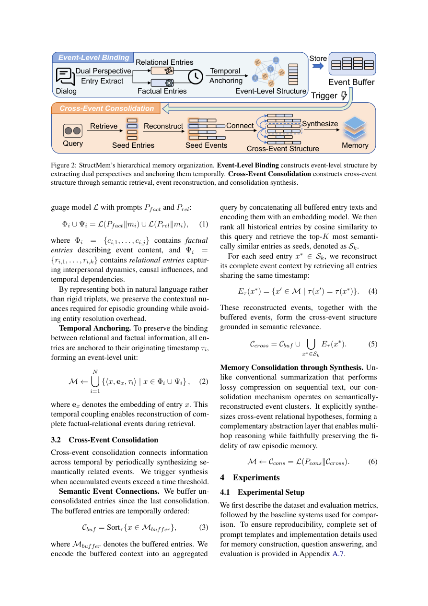

#1
★ 7/10
StructMem: Structured Memory for Long-Horizon Behavior in LLMs
StructMem：面向大语言模型长时行为的结构化记忆

图 Figure · Page 3 of paper
🎯 结构化层级记忆框架，提升LLM长程对话推理能力
A hierarchical structured memory framework enabling LLMs to reason across long conversations efficiently.
| 维度 | 中文 | English |
|---|---|---|
| ❓ 待解决 的问题 |
长期对话智能体需要记住对话历史中事件之间的关系，而不仅仅是孤立的事实，才能回答涉及多跳推理和时序关系的复杂问题。现有记忆方案面临两难困境：扁平记忆效率高但无法建模关系结构；基于图的记忆支持结构化推理，但构建代价昂贵且脆弱。如何在保留结构性推理能力的同时降低系统开销，是核心挑战。 | Long-term conversational agents must capture relationships between events—not just isolated facts—to handle temporal reasoning and multi-hop questions over extended dialogues. Existing memory systems face a fundamental trade-off: flat memory is lightweight but lacks relational structure, while graph-based memory supports structured reasoning but is expensive and brittle to build. The challenge is achieving structured reasoning capability without the prohibitive computational cost. |
| 💡 解决 的亮点 |
• **双视角时序锚定**：从主客观双视角对事件进行时间戳绑定，保留事件级上下文绑定，避免信息丢失。 • **周期性语义整合**：定期对记忆进行语义层面的聚合与压缩，在保留跨事件连接的同时大幅减少token消耗。 • **层级结构设计**：在扁平记忆与图记忆之间找到平衡点，无需显式构建知识图谱即可支持多跳推理。 | • **Dual-perspective temporal anchoring**: Events are grounded with timestamps from two complementary viewpoints, preserving event-level context bindings and preventing information loss. • **Periodic semantic consolidation**: Memory is periodically compressed and consolidated at the semantic level, maintaining cross-event connections while drastically cutting token usage. • **Hierarchical structure without explicit graphs**: Achieves structured relational reasoning without the fragile and expensive step of constructing explicit knowledge graphs. |
| 🧪 实验 内容 |
实验在长程对话基准数据集LoCoMo上进行，该数据集专门用于测试长期记忆和多跳推理能力。与多个代表性记忆系统基线进行对比，包括扁平记忆、基于图的记忆等方案。评估指标覆盖问答准确率（时序推理类和多跳类子任务），以及系统效率指标如token用量、API调用次数和运行时间。 | Experiments were conducted on the LoCoMo benchmark, a dataset specifically designed to evaluate long-term conversational memory, temporal reasoning, and multi-hop question answering. StructMem was compared against multiple baseline memory systems including flat memory and graph-based memory approaches. Evaluation covered both task performance (accuracy on temporal reasoning and multi-hop QA subtasks) and system efficiency metrics including token usage, API call counts, and wall-clock runtime. |
| 📊 实验 结果 |
StructMem在LoCoMo基准上的时序推理和多跳问答子任务上均优于现有记忆系统基线。在效率方面，与图结构记忆方案相比，StructMem大幅降低了token消耗、API调用次数和运行时间（具体数字见原文及GitHub仓库），在保持甚至提升推理精度的同时实现了显著的计算节省。 | StructMem outperforms prior memory system baselines on both temporal reasoning and multi-hop QA subtasks of the LoCoMo benchmark. On the efficiency front, compared to graph-based memory systems, StructMem substantially reduces token usage, API call counts, and runtime (specific figures available in the paper and GitHub repository), achieving notable computational savings while maintaining or improving reasoning accuracy. |
| 🏁 结论 | StructMem证明了通过层级化结构与双视角时序锚定，可以在无需显式知识图谱的前提下，同时提升长程对话智能体的推理能力与系统效率。该工作为设计可扩展、低成本的LLM长期记忆系统提供了新的范式。 | StructMem demonstrates that hierarchical structure with dual-perspective temporal anchoring can simultaneously improve reasoning performance and reduce computational overhead in long-term conversational agents, without relying on explicit knowledge graphs. This work establishes a new paradigm for scalable, cost-efficient long-term memory in LLMs. |
| 🔗 论文 链接 |
arXiv: 2604.21748v1 · 📥 PDF | |
⚙️ Method · 方法详解
StructMem构建了一个层级化的结构增强记忆框架。它首先从双视角（如主观感受与客观事实）对每个对话事件进行时间锚定，形成带有时序绑定的事件级记忆单元。随后，系统周期性地对累积记忆进行语义整合，将相关事件归纳为更高层次的摘要节点，从而在不显式建图的情况下隐式编码跨事件关系。检索时，系统可以沿层级结构导航，定向支持时序推理和多跳问答，同时避免了图数据库的高昂构建与维护成本。
StructMem builds a hierarchy of structured memory units over long conversations. Each dialogue event is temporally anchored from dual perspectives (e.g., subjective and objective views), creating event-level bindings that preserve relational context. Periodically, the system performs semantic consolidation—merging related event memories into higher-level summary nodes—implicitly encoding cross-event connections without an explicit knowledge graph. During retrieval, the hierarchical structure allows targeted navigation to support temporal and multi-hop reasoning, while the consolidation step keeps token usage and API calls low.
🌟 Why It Matters · 为什么重要
随着LLM被部署为长期个人助手和对话智能体，如何让模型高效记忆并推理跨越数周乃至数月的对话历史，是走向实用化的关键瓶颈。StructMem提供了一种兼顾推理能力与计算效率的结构化记忆方案，直接推动了长程对话AI系统的落地可行性。
As LLMs are increasingly deployed as long-term personal assistants and dialogue agents, efficiently reasoning over months of conversation history is a critical bottleneck for real-world adoption. StructMem offers a practical structured memory solution that balances reasoning capability with computational efficiency, directly advancing the feasibility of deployed long-horizon conversational AI systems.